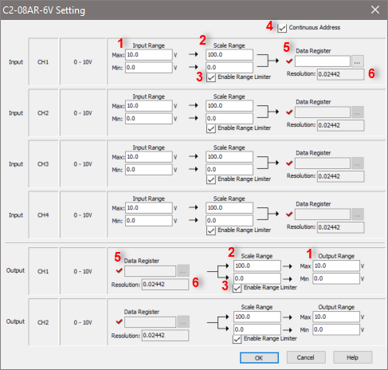

| C2-08AR-6V Settings |
|
The C2-08AR-6V Setting dialog allows the customer to set up the scaling for the analog input and output values and assign DF memory addresses to store the scaled analog input and output values.

1 Input/Output Range: Enter the maximum and minimum Input or Output Range to scale.
2 Scale Range: Enter the maximum and minimum scaled values.
In the following example, the Input Range is set to 4.0 - 8.0 V and the Scale Range is set to 0.0 - 100.0. This means input voltage 4.0 V will be converted to 0.0 and input voltage 8.0 V will be converted to 100.0. When the input voltage is 6.0 V, 50.00 will be the value in DF1.

3Enable Range Limiter: By checking this option, the analog values that are outside of the Input Range or Output Range will be adjusted to the minimum or maximum value of the Scale Range.
1. Enable Range Limiter is ON.

2. Enable Range Limiter is OFF.

4 Continuous Address: If you want to assign continuous DF memory addresses to store the scaled analog input and output values, please check this option. In this case, you willt need to assign a DF memory address to CH1. The DF memory address will be the starting address of those continuous DF memory addresses.
5 Data Register: Enter a DF memory address to store the scaled analog input value, or unscaled analog output value. In the CLICK PLC, all analog data are handled as floating point numbers. So you can select only DF memory addresses.
6 Resolution: The CLICK Software automatically calculates the resolution of the scaled data according to the bit resolution of the analog input or output and the scaling setup, and displays the value here.